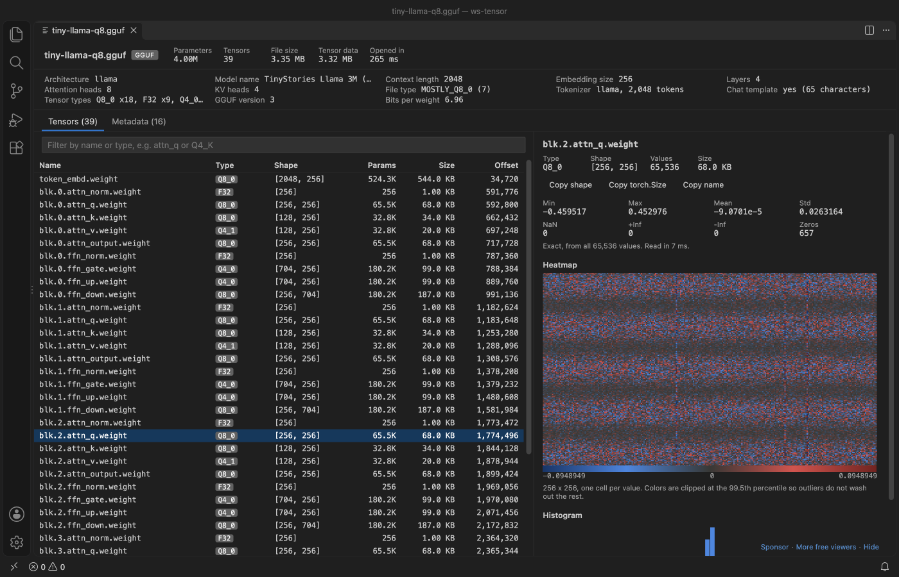

Open files in VS Code and Cursor / Machine learning files
Inspect a GGUF model file in VS Code
Tensor Viewer opens a .gguf file in VS Code and shows the architecture, model name, context length, layers, heads, file type, tokenizer, chat template and bits per weight, then every tensor with its quant type, shape, size and offset. Click a tensor for min, max, mean, std and a heatmap, with Q4_K, Q8_0 and other common quant types dequantized as llama.cpp computes them. You need no Python and no llama.cpp build, and the file is never changed. Zovo Pro (USD 19 once) adds a compare of two checkpoints and a scan of all tensors for NaN, Inf and zeros, with 3 free tries each.
Free, MIT license. Extension ID zovo.tensor-viewer, version 0.6.7. Needs VS Code 1.90.0 or newer.

Steps in VS Code
- Install Tensor Viewer from the Marketplace, or press Ctrl+P (Cmd+P on macOS) and run
ext install zovo.tensor-viewer. - Click the
.gguffile in the Explorer. The header is read in 2 MB steps until the tensor list ends, so a model of several GB opens without reading the weights. - The summary row shows the architecture, model name, context length, embedding size, layers, heads, KV heads, file type, tokenizer size, chat template and bits per weight.
- Open the Metadata tab for every key, such as
tokenizer.chat_templateorllama.rope.freq_base, with a filter for keys and values. - In the Tensors tab, type
attn_qorQ4_Kin the filter to find tensors by name or type. Click a header to sort. - Click a tensor for min, max, mean, std, NaN, Inf and zero counts, a heatmap and a histogram. The Values table under them shows the dequantized numbers, 32 rows at a time.
Where Zovo Pro saves time
Opening GGUF, Safetensors, PyTorch, NPY and NPZ files, the metadata, the stats, heatmaps, the Values table and Save as .npy or CSV are free. The viewer makes no network calls.
After you quantize a model, you want to know how far each tensor moved. Compare two checkpoints reads every value of every tensor in two files, for example the F16 GGUF of a model and its Q4_K GGUF, and lists per tensor the max and mean absolute difference, RMSE, relative L2 error, cosine similarity and the count of values that differ. Tensors in one file only and shape or type changes are listed too. The other Pro tool, Scan all tensors, reads every value and flags NaN, Inf, all-zero and constant tensors.
With Compare two checkpoints (Zovo Pro)
- Open the first GGUF file and click Compare with... at the top of the viewer, or run "NumPy Viewer Pro: Compare Two Tensor Files (Checkpoint Diff)" from the Command Palette.
- Pick the second file, for example the quantized version of the same model. Tensors are matched by name.
- Read the report. Filter it to "Only tensors that differ", and save it as CSV, Markdown or JSON. A 7B model in F16 is about 14 GB, so expect about a minute on a fast SSD.
Compare two checkpoints works 3 times on your computer before it asks for a license, and a try counts only when you get a result. Opening a file shows no popup and no countdown.
Zovo Pro costs USD 19 once. It is not a subscription, and it turns on the Pro tools in every Zovo extension, not only Tensor Viewer. After a card payment (Stripe) your license key shows on the next page. In VS Code, run "Zovo Pro: Enter Zovo Pro license key" from the Command Palette and paste it. The key is checked on your computer, with no network call. With GitHub Sponsors, pick the "$19 one time" tier, then run "Zovo Pro: I already paid: unlock with GitHub Sponsors" and sign in with the same GitHub account. With PayPal, send USD 19 with "Zovo Pro" in the note and the key comes by email within a day.
A team of 5: USD 59 once, by card or by PayPal. Every rule and every Pro tool is on the Zovo Pro page.
Steps in Cursor, Windsurf or VSCodium
- Open the Extensions view with Ctrl+Shift+X (Cmd+Shift+X on macOS).
- Search for
zovo.tensor-viewerand click Install. Cursor, Windsurf and VSCodium install from Open VSX, where it is published aszovo/tensor-viewer. - If your editor has no gallery, download the .vsix from the Open VSX page and run "Extensions: Install from VSIX...".
- Then use it the same way as in VS Code.
What Tensor Viewer handles
- GGUF v1 to v3 metadata and tensor info.
- F32, F16, BF16, Q8_0, Q4_0, Q4_1, Q5_0, Q5_1, Q4_K, Q5_K and Q6_K tensors decoded for stats and heatmaps.
- Shapes in row-major order, the way PyTorch prints them.
- Large models, since only the header and the tensor you click are read.
What it does not do
- Q2_K, Q3_K, IQ, TQ and MXFP4 tensors are listed with their size and offset, but have no stats yet.
- A GGUF split into shards shows the tensors of the open shard only.
- For a big tensor, the stats come from up to 2,000,000 values (setting
tensorViewer.sampleValues). The panel says when they come from a sample. - Shapes show reversed from llama.cpp logs, so
[4096, 32000]there is[32000, 4096]here. - Files not on the local disk are read whole, up to 512 MB.
Other options
- gguf-py. The Python package from llama.cpp (
pip install gguf). Its gguf-dump script prints the metadata and the tensor list. Free, needs Python. - Hugging Face Hub. For models on the Hub, the page of a .gguf file shows its metadata and tensors in the browser. It does not cover files on your disk.
Install counts and Open VSX status were checked on 12 November 2026. Descriptions in quotes are the extensions' own.
Questions
Do I need Python or llama.cpp?
No. The extension reads GGUF with a bundled JavaScript reader (@huggingface/gguf), offline.
Does it load the whole model into memory?
No. It reads the header, and for the tensor you click it reads at most the sample size of values.
Does it open Safetensors and PyTorch files too?
Yes. The same extension opens .safetensors, .pt, .pth, .ckpt, .npy and .npz files. This site has a separate guide for Safetensors.
Does it work in Cursor or Windsurf?
Yes. Cursor, Windsurf and VSCodium install extensions from Open VSX. Search for the extension in their Extensions view and install it there.
More about Tensor Viewer
Read the Tensor Viewer page for every feature and setting, or the source code on GitHub.
Related guides
- NPZ & NPY Viewer, PyTorch & Safetensors on the VS Code Marketplace (also on Open VSX). Shows arrays, shapes and values from .npy, .npz, .pth, GGUF and safetensors files.
- View .npy and .npz NumPy files in VS Code
- A safetensors viewer for VS Code
- Open a .npz file in VS Code
- Compare two PyTorch checkpoints
Zovo Pro and support
Zovo Pro: USD 19 once, every Zovo viewer. It turns on the Pro tools in this extension and in the other Zovo extensions you use. The free features stay free.
After a card payment your license key shows on the next page. Paste it with the command "Zovo Pro: Enter a key".
You can also support the work with no Pro:
Need your format supported?
Open a format request with a sample file, and I reply there whether it can be done. For USD 299 once, through this GitHub Sponsors tier, I add your file format or a missing feature to this extension, with tests, within 7 days.